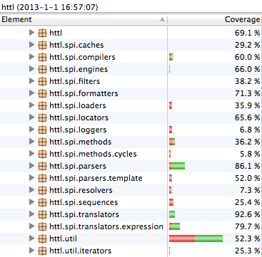

2013-04-07 HTTL 1.0.9 版本已发布，欢迎使用和反馈问题。
概述
HTTL (Hyper-Text Template Language) 是一个高性能的开源JAVA模板引擎， 适用于动态HTML页面输出， 可替代JSP页面， 指令和Velocity相似。
简洁友好的模板语法
语法尽可能符合HTML和JAVA开发者的直觉，指令和老牌的Velocity类似，但改进了Velocity中不符合直觉的地方。 只保留最基本的条件迭代控制指令，渲染过程不允许修改原始数据，防止模板带过多业务逻辑。默认使用HTML注释语法，避免干扰原生HTML页面。
<html>
<body>
<!--#if(books)-->
<table>
<!--#for(Book book : books)-->
<tr>
<td>${book.title}</td>
</tr>
<!--#end-->
</table>
<!--#end-->
</body>
</html>
改进Velocity不符合直觉的地方：
- 指令中的变量不用加$符，如：#if(a == b)，而不像Velocity那样：#if($a == $b)，加$有点废话，而且容易忘写。
- ${x}当变量为null时，输出空白串，而不像Velocity那样：输出源码${x}，如果用$!{x}，感叹号容易忘记写。
- 支持在输出时进行表达式计算，如：${i + 1}，而不像Velocity那样：要先#set($j = $i + 1)到一个临时变量。
- 采用更直观的方式，调用静态工具方法，如：${"a".toChar}，而不像Velocity那样：$(StringTool.toChar("a"))。
精益求精的性能优化
将模板编译成JAVA字节码运行，并使用强类型推导，减少运行期反射和转型， 渲染速度接近Java硬编码输出，比Velocity等其它模板引擎快一个数量级。 比JSP也快，因为JSP只有Scriptlet是编译的，Tag和EL是解释执行的，而HTTL是全编译的。
高质量的设计与实现
模板自描述，在模板内声明入参变量类型，并基于入参类型推导模板内所有变量类型，使IDE能方便的实现变量方法补全提示， 对开发过程友好。出错信息精确定位行列，并显示出错位置前后相关内容。采用微核+插件体系，所有环节均可扩展，方便集成和二次开发。

严格确保质量，请放心使用，HTTL在发布前已做：
- 所有语法指令函数模板单元测试，确保所有模板指令的解析和执行正确。
- 性能对比基准测试，确保性能接近Java硬编码输出，高出其它引擎一个数量级。
- 长时间运行稳定性测试，确保不出现FullGC,内存溢出,死锁,CPU占满,抖动等。
- 内存占用和CPU耗时Profiler分析，确保不出现非预期的内存和CPU瓶颈。
- Web应用集成测试，确保在SpringMVC,Struts,Webx等集成中可用。
- 环境兼容性测试，确保在Liunx,Windows,OSX,JDK1.5,1.6,1.7等环境可用。
- FindBugs代码问题检测，确保不出现空指针，资源未关闭等明显错误。
- JDepend分包依赖检测，确保分包依赖的合理性。